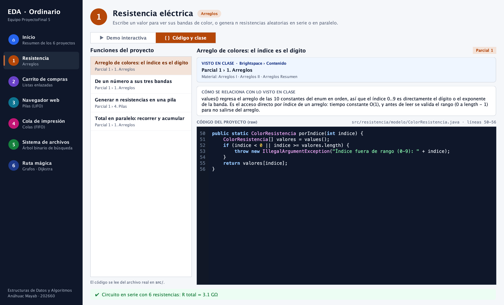
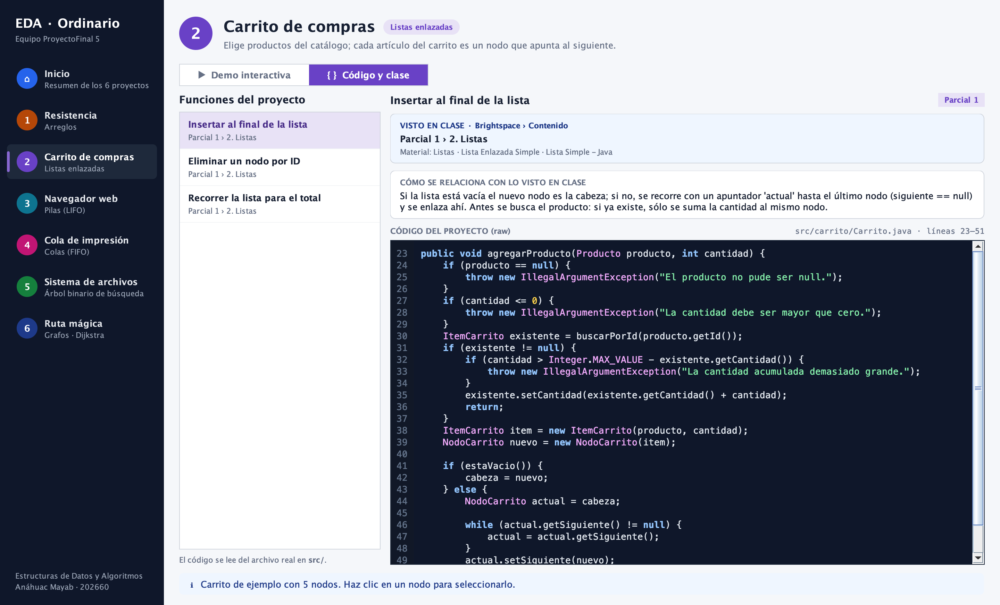
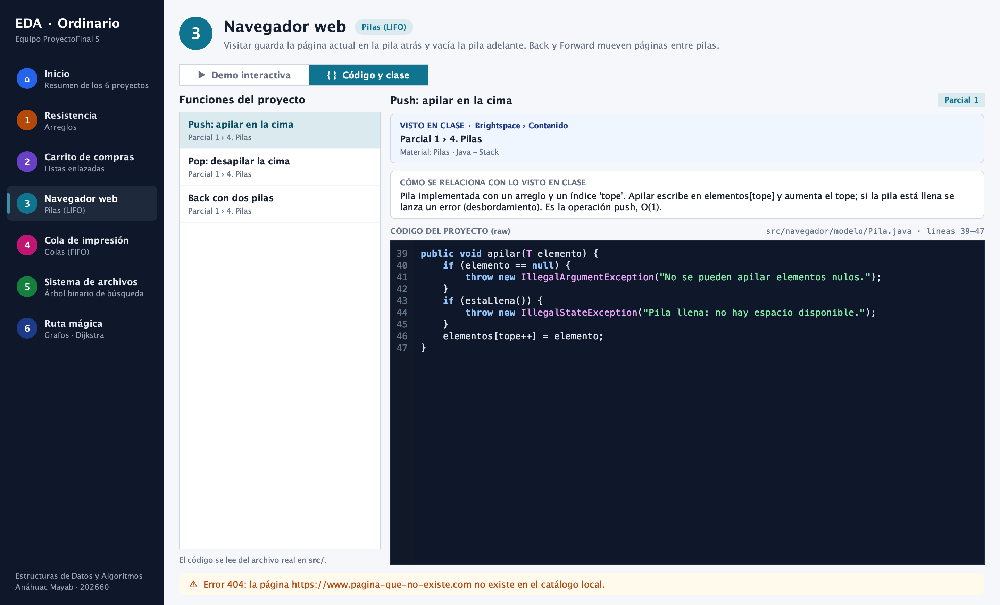
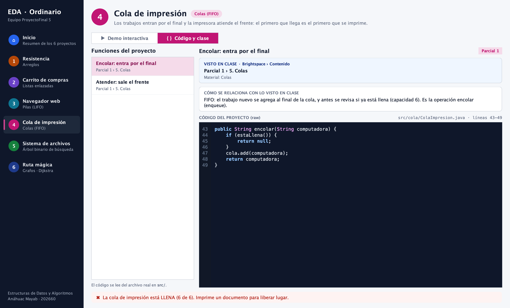
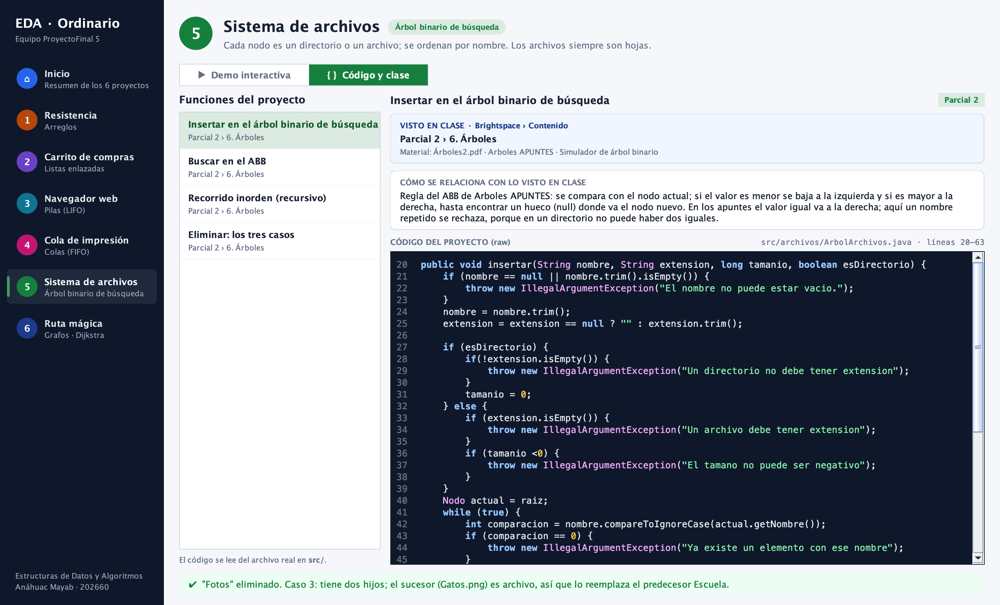
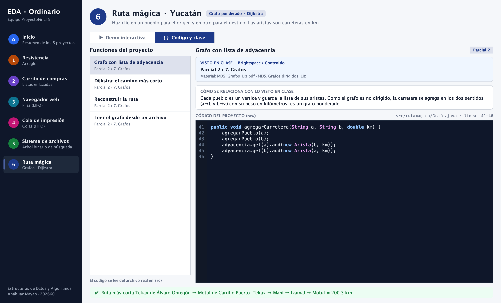

Cargando el dashboard… La primera vez puede tardar hasta un minuto.
En cada proyecto hay dos botones: Demo interactiva y Código y clase, que muestra el código real de cada función y el tema del curso con el que se relaciona.
Es el mismo programa en Java (Swing) ejecutándose en el navegador. Built with CheerpJ. Se ve mejor en una computadora; en el teléfono usa las capturas.
Capturas de «Código y clase»











